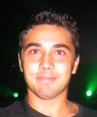
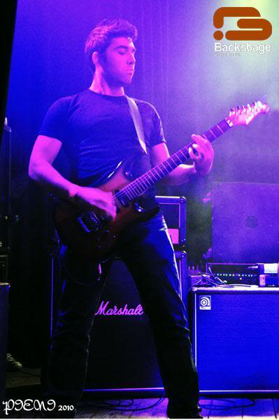

Curriculum Vitae.
Experiência Profissional
Programador Analista na Porini International (Jul2010 a Out2013)
www.porini.pt
Desenvolvimento e manutenção de aplicações desenvolvidas na Framework .Net:
- Evaluation Reports: Produzir relatórios de avaliação de segurança de modo automático em Word para farmacêutica, com base em fichas ténicas de ingredientes e produtos - (Asp.Net WebForms, C# e MySql)
- Porini Saft-PT: Exportar facturação do ERP Porini (GTex AS400) para ficheiro xml normalizado. Envio de guias de transporte via WebService para site da AT - (WinForms, C# e DB2);
- PLM Requests: Módulo intranet que permite criar/gerar pedidos de desenvolvimento para a 2ea têxtil - (Asp.Net WebForms, C# e Sql Server);
- PIL Configuration: Módulo que permite através de webservices existentes faz migração de dados de DB2 para Microsoft SQL Server - (WinForms, C#, Microsoft Sql Server/DB2);
- Porini Image Viewer: software que permite visualizar, manipular e criar cat,ogos de produtos tirados com o estäio fotográfico StyleShoots - (WPF, C#);
- PIVSS Site: permite aos utilizadores fazer o download das suas sessões de fotos, visualizar as
fotos e fazer comentários às mesmas - (Asp.net MVC, C# e MySQL);
Programar/Desenvolver Sistemas de Apoio Decisão com o software Qlikview:
- Análise, Desenvolvimento e Implementação de projetos em Qlikview;
- Configuração/Administração Qlikview Server (Formação Qlikview Server e Publisher -
2 dias Qliktech Ibérica Madrid);
- Modelação de Dados, ETL.
Competências nas seguintes ferramentas/linguagens de programação/protocolos:
- Windows Forms, WPF (Xaml), ASP.NET WebForms e MVC (Razor);
- Ado.Net e Entity Framework;
- IDEs: Microsoft Visual Studio;
- Base de Dados: Microsoft Sql Server, MySql;
- Linguagens de ProgramaDŽo: C#, Java, JavaScript, jQuery (Ajax), T-Sql, Html5, CSS;
- Protocolos/Arquiteturas/EDI: SOAP, REST, HTTP, JSON.
- Qlikview Desktop e Server;
2ºMarinheiro na Marinha de Guerra Portuguesa (Out2004 a Set2007)
www.marinha.pt
Militar da Marinha da Classe Praça da Especialidade de Fuzileiro - Chefe de Equipa / 2ºMarinheiro:
- Chefe de Equipa de Segurança e Vigilância a Postos de Telecomunicaǔes NATO, Estado Maior
General das Forças Armadas e outras instalaǔes pertencentes ao ramo da Marinha. Actividades
de treino, preparação e simulação para missões internacionais
Experiência Académica
Mestrado em Engenharia Informática no ISEP (Set2011 a Mai2013)
www.isep.ipp.pt
Mestrado em Engenharia Informática na Área de Arquitectura, Sistemas e Redes:
- Engenharia de Segurança Informática;
- Programação de Sistemas Distribuídos;
- Software Concorrente e Fiável;
- Interfaces e Design.
Licenciatura em Informática no IPCA (Ago2007 a Set2010)
www.ipca.pt
Licenciatura em Informática para a Área da Saúde:
- Linguagens de Programação;
- Bases de Dados;
- Sistemas de Apoio Decisão
- Análise de Sistemas de Informação;
- Programação Web;
- Redes de Computadores.

Tempos Livres.
Mais sobre mim.
Música, Programação, Computadores, Futebol, Família, Amigos, Namorada...
Guitarrista da banda de música alternativa
Eyeblast.
Gosto de passar bons momentos com a famlia, namorada e amigos.
Futeboladas, corridas e qualquer outro tipo de desporto que
envolva novos desafios são sempre bem-vindos...